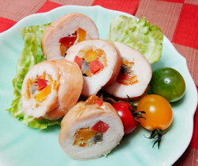

道明寺の桜もち
- 調理時間：40 分
- （一人当たり）
- カロリー：68.5kcal
- たんぱく質：2.9g
- 脂質：0.2g
- 炭水化物：13.8g
- 塩分：0.1g


＜8個分＞
- 道明寺粉
- 100g
- 砂糖
- 10g
- 色粉
- 極少量
- 水
- 150ml
- 練りあん
- 20g
- 桜の葉の塩漬け
(塩抜きする) - 8枚
- 桜の花の塩漬け
(塩抜きする) - 適宜


- 道明寺粉はサッと水洗いして水をきり、鍋（フタ付き）にいれ、水150mlをくわえて10分おく。
色粉をごく少量、水で溶いて①に入れ、淡いピンク色にする。（炊くと色が濃くなるので注意） - ①を火にかけ、木べらで混ぜながら火にかける。
水気がなくなってきたら、フタをして10分蒸らす。 - 練りあんを25ｇずつに分け、まるめる。
- ②の粗熱をとり、8等分にしてラップの上で円形にのばす。
練りあんをのせて包み、包み終わりが下にくるようにし、桜の葉で巻き、桜の花の塩漬けを飾る。
道明寺の桜もち
桜もちは関東風の長命寺（平鍋物）と関西風の道明寺（餅物）の２種類があります。始まりは、江戸時代。向島の長命寺で門番をしていた山本新六が、隅田川の桜並木から落ちる葉を塩漬けにして餅に巻くことを思いつき売り始めました。道明寺はそののちに関西で誕生。桜の葉の独特な香りは、芳香成分のクマリン。生きている葉にはあまり感じられず、塩漬けにすることであの独特な香りが生まれます。安心感のある香りは不安感を軽減し、物事を前向きに考えるサポートをしてくれるかもしれません。餡は小豆餡だけでなく、白餡やうぐいす餡など季節を楽しみましょう。